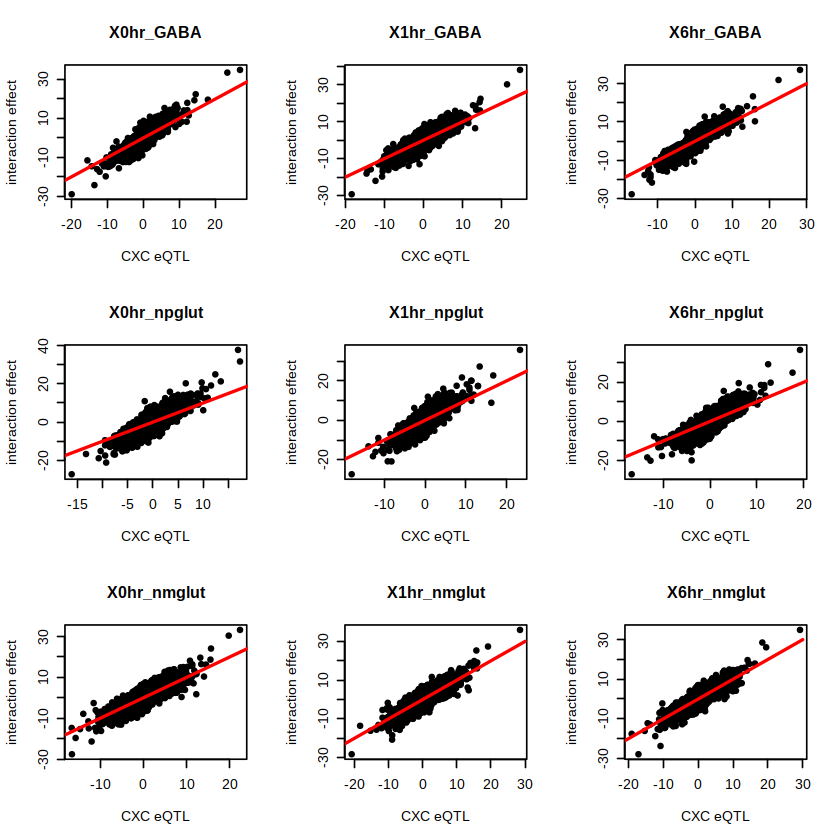
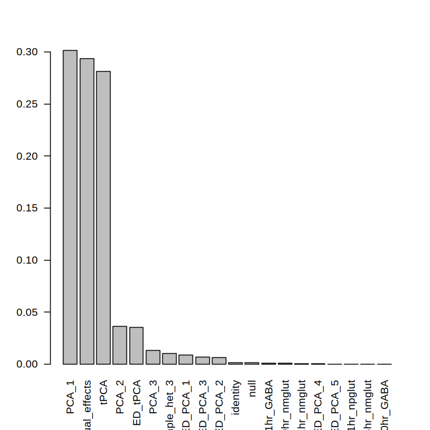
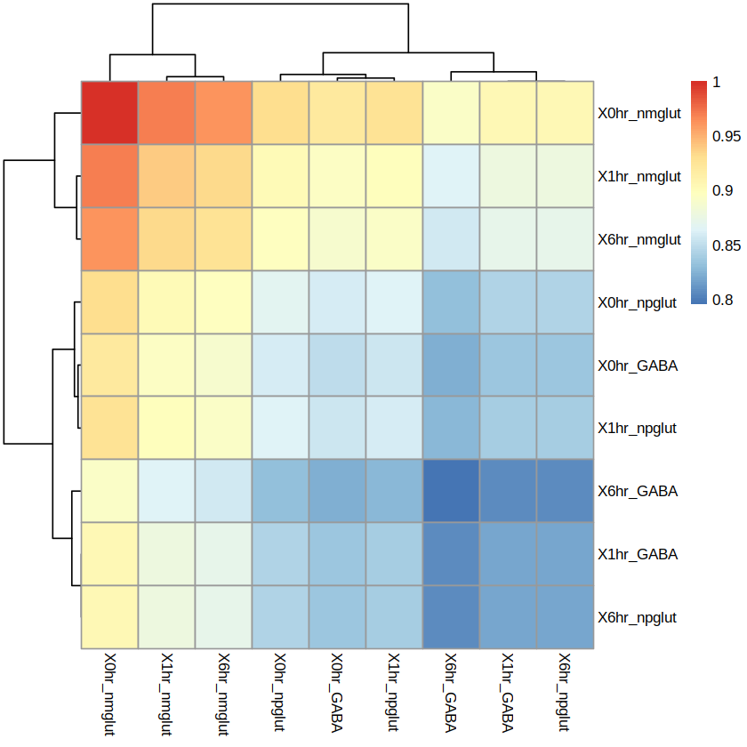
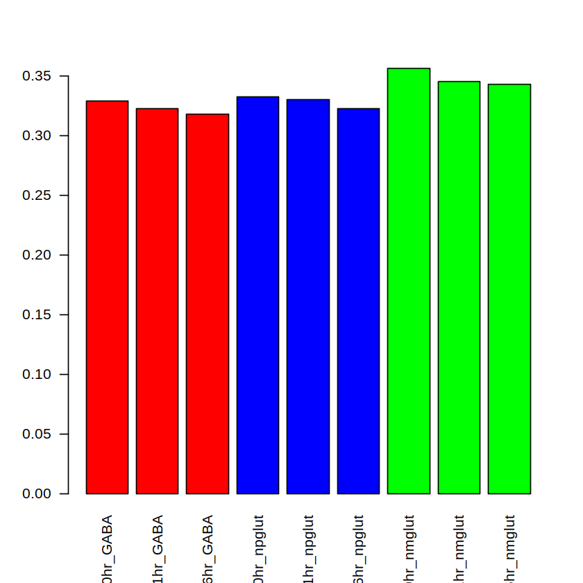
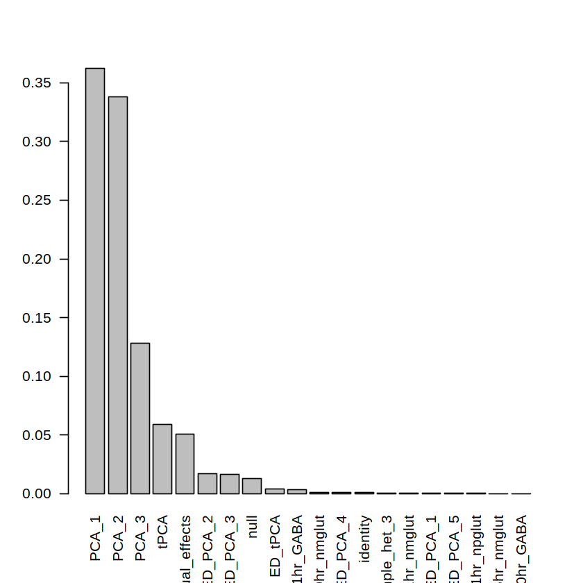
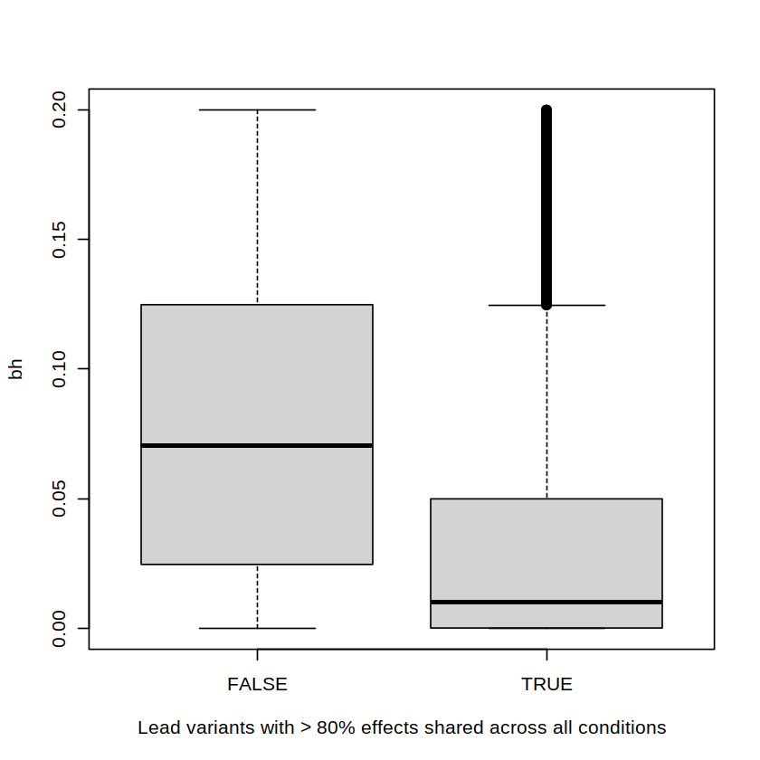
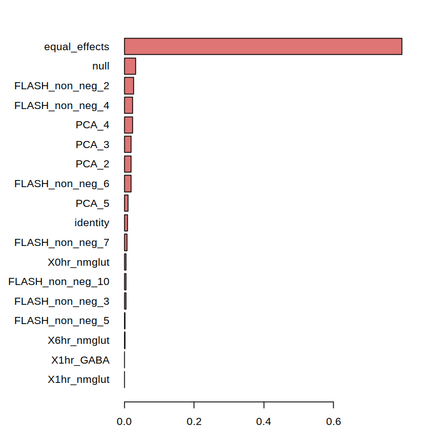
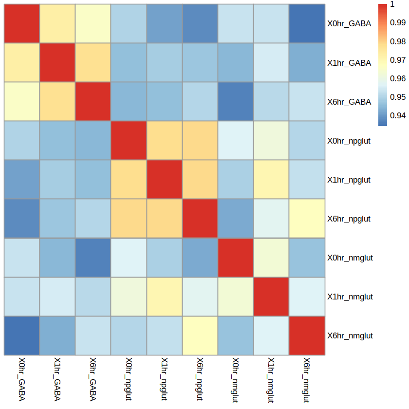
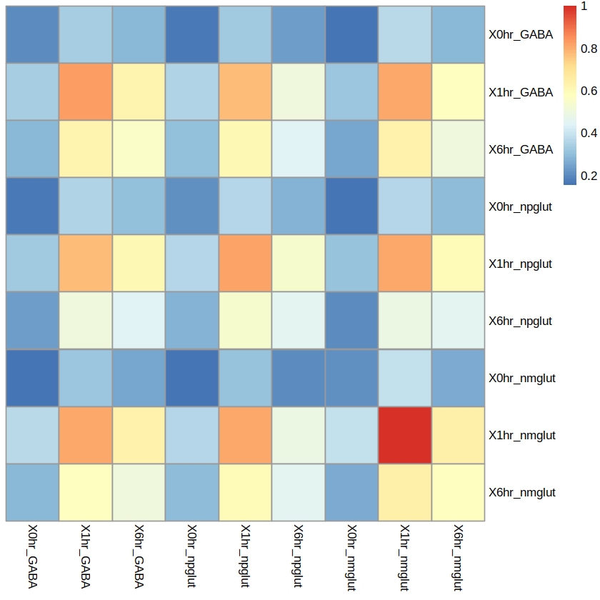
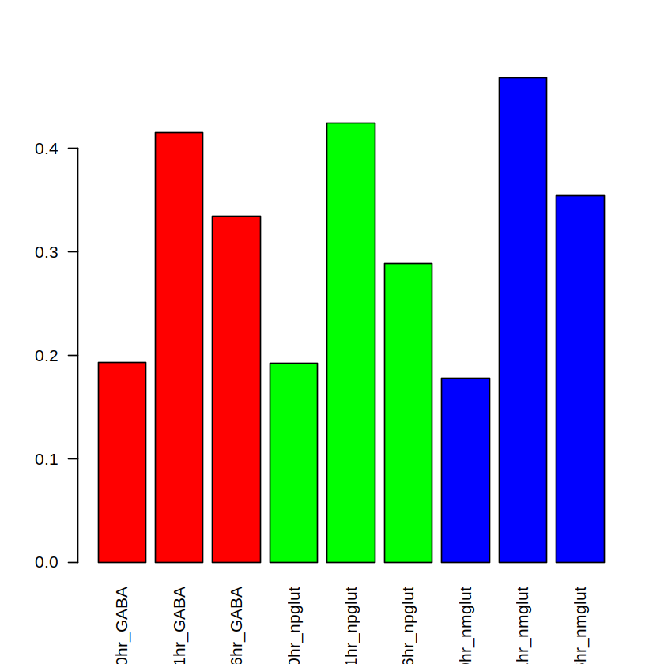

Last updated: 2024-08-05
Checks: 2 0
Knit directory: neuron_stim_eQTL100/
This reproducible R Markdown analysis was created with workflowr (version 1.7.0). The Checks tab describes the reproducibility checks that were applied when the results were created. The Past versions tab lists the development history.
Great! Since the R Markdown file has been committed to the Git repository, you know the exact version of the code that produced these results.
Great! You are using Git for version control. Tracking code development and connecting the code version to the results is critical for reproducibility.
The results in this page were generated with repository version 7d70d1a. See the Past versions tab to see a history of the changes made to the R Markdown and HTML files.
Note that you need to be careful to ensure that all relevant files for
the analysis have been committed to Git prior to generating the results
(you can use wflow_publish or
wflow_git_commit). workflowr only checks the R Markdown
file, but you know if there are other scripts or data files that it
depends on. Below is the status of the Git repository when the results
were generated:
Ignored files:
Ignored: .DS_Store
Ignored: .RData
Ignored: .Rhistory
Ignored: data/.DS_Store
Ignored: data/single_group_ctwas/.DS_Store
Untracked files:
Untracked: GTEx_vs_SCZ.png
Untracked: GTEx_vs_SCZ.png.2024-08-05_13-02-45.log
Untracked: GTEx_vs_SCZ.png.2024-08-05_13-21-32.log
Untracked: GTEx_vs_SCZ.png.2024-08-05_13-23-14.log
Untracked: GTEx_vs_SCZ.png.2024-08-05_13-30-00.log
Untracked: data/processed_neuroticism_res4.rds
Unstaged changes:
Modified: data/processed_SCZ_res4.rds
Modified: data/processed_adhd_res4.rds
Note that any generated files, e.g. HTML, png, CSS, etc., are not included in this status report because it is ok for generated content to have uncommitted changes.
These are the previous versions of the repository in which changes were
made to the R Markdown (analysis/mashr_analysis.Rmd) and
HTML (docs/mashr_analysis.html) files. If you’ve configured
a remote Git repository (see ?wflow_git_remote), click on
the hyperlinks in the table below to view the files as they were in that
past version.
| File | Version | Author | Date | Message |
|---|---|---|---|---|
| Rmd | 7d70d1a | Lifan Liang | 2024-08-05 | wflow_publish(c("analysis", "docs")) |
| html | ec42627 | Lifan Liang | 2024-05-22 | Build site. |
| Rmd | 05be444 | Lifan Liang | 2024-05-22 | wflow_publish(c("analysis", "docs")) |
| html | 05be444 | Lifan Liang | 2024-05-22 | wflow_publish(c("analysis", "docs")) |
We compared the Z scores of ieQTLs with those of eQTLs computed condition by condition. They are highly concordant. But ieQTLs have higher z scores in all conditions. Note that we only compared the 12272 gene-SNP pairs selected as the strong subset in the next section.

We basically followed the tutorial of MASH for eQTL.
Distribution of the posterior weights are shown below:

PCA_1 and tPCA are very similar to equal effects. Below is the heatmap for PCA1 covariance matrix.

The first eigen vector (>99% PVE) of this covariance matrix also indicates equal sharing.

Therefore, 90% of genetic effects are shared across all conditions. At first, I suspected the individual effect is still strong. If that’s the case, the random subset should exhibit similar effect sharing. However, the posterior distribution of the random subset only has around 45% effects shared across conditions.

Persistent effects are strong when the genetic effect is consistent across contexts. Hence lead variants in persistent effects tend to be shared across conditions. To verify this hypothesis, I divided the lead eQTLs into two subsets: one with >80% posterior weights in universal sharing (including PCA1, tPCA, and equal_effects) and the rest. As shown in the box plot below, eQTLs with high universal sharing have much smaller FDR than those with lower sharing.

To avoid the bias of persistent effects, we selected the union of lead eQTLs per gene per context as the cadidate for the strong subset. FDR threshold is 0.2. However, lead eQTLs for the same gene may be in high LD and over-represent certain sharing patterns.
Therefore, for each gene, we computed \(R^2\) among the lead variants based on genotypes of the 100 cell lines. SNP pairs with \(R^2>0.1\) were pruned. After pruning, we obtained 57398 SNP-gene pairs.
These SNP-gene pairs were utilized as the strong subset for MASH analysis and we rerun the previous procedure. But ED was replaced by ultimate deconvolution (UD). And we included FLASH results to the starting point.
We removed gene-SNP pairs with posterior of being NULL (point mass at zero) above 80%. As shown in the figure below, most eQTLs are shared across all conditions (equal effects and FLASH_nonneg_2). Around 17% of eQTLs were outside the all sharing pattern.

We also computed pairwise sharing among tissues with the posterior effect sizes. Correlation was mostly above 0.95.

One of the patterns, PCA_5, shows shared dynamic effects although it only has 1% posterior weight.

Its first Eigen vector is:
